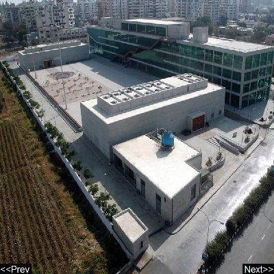

Science center
Science Centre, Surat is a multi-facility complex in Surat, Gujarat, India built by the Surat Municipal Corporation in 2009, the first of its type in western India.
Address:
City Light Rd, City Light Town, Gujarat 395001